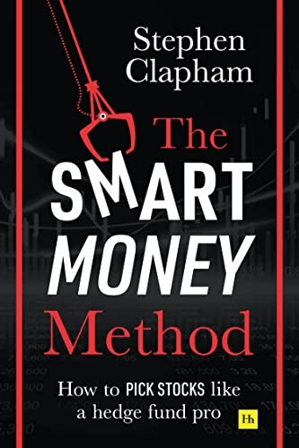

斯蒂芬·克拉帕姆（Stephen Clapham）做了大约二十年卖方分析师，覆盖交通运输板块，长期在行业评级中位列前十；2005年他转投买方，在管理数十亿美元的对冲基金担任合伙人兼研究主管，专攻需要深挖的特殊情况。从对冲基金退下来后他没有离开这一行，而是创办了培训机构Behind the Balance Sheet，专门教机构投资者的分析师怎样做研究，其中讲法务会计（forensic accounting，即从财报里识别造假与粉饰）的课程尤为知名。《聪明钱方法》2020年11月由Harriman House出版，共298页，是他把这套在一线用了三十年的研究流程写成的操作手册。本书目前没有官方中文版，此处中文标题为编者所译。
全书按一笔投资的生命周期来排章节：新想法从哪里来、如何在很短时间内判断一个想法值不值得深挖、怎样拆解一门生意的质量和它所在行业的格局、如何评估管理层、如何在财报里找出会计危险信号从而避开正在恶化的公司、怎样估值以确认股价是否还留有空间，以及买入之后如何跟踪、在什么条件下卖出。克拉帕姆反复强调的一点是，分析师的任务不是把一家公司了解得面面俱到，而是找出真正决定这笔投资盈亏的两三个变量，再把精力压在那里；书里给出的是他自己在用的检查清单和估值细节，而不是教科书式的定义。成书正值2020年，他也专门用一章讨论新冠这类突发冲击对研究框架的考验。
本书的推荐者多来自英国资管界。施罗德集团首席执行官彼得·哈里森（Peter Harrison）称它"对任何想精通选股的人来说都是一本极好的读物"（An extremely good read for anyone wanting to master the art of stock picking）；经济史学者罗素·纳皮尔（Russell Napier）说这是"一本浓缩了一辈子职业经验、给出别处找不到的实操建议的书"（A book crammed with lifetime professional experience with practical advice you won't find elsewhere）；《星期日泰晤士报》商业主编奥利弗·沙阿（Oliver Shah）的评价是"干脆、犀利"。也有评论指出，本书对纯粹的新手并不友好——它默认读者已经会看财报，长处在于想法的密度而非手把手的入门，这与作者面向职业分析师的定位是一致的。
把这本书和多数投资读物区分开的，是它讲的是流程而不是理念。多数书告诉读者应该相信什么——安全边际、护城河、长期持有；克拉帕姆记录的则是一个职业买方分析师具体怎么动手：先翻哪张报表、对哪些数字保持警惕、模型里哪一格最容易出错。对已经读过格雷厄姆和费雪、也大致认同价值投资的人来说，本书补上的正是从"知道该怎么想"到"知道该怎么做"之间那段常被略过的距离；其中识别财务粉饰的部分，可以和《财务诡计》这类书对照着读。